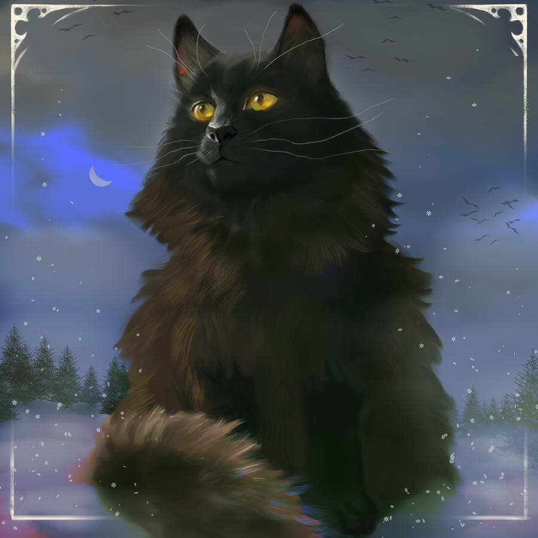
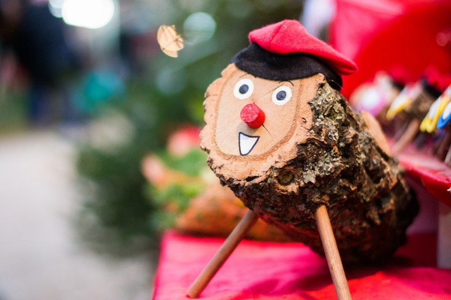
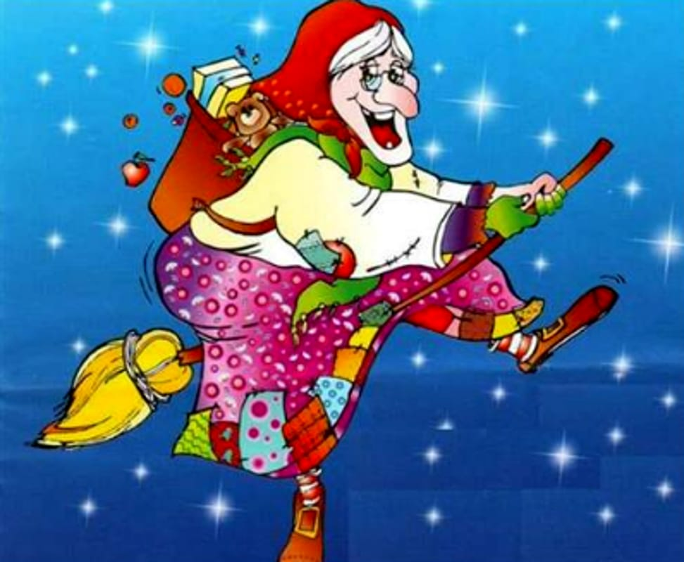
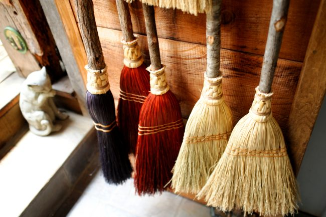

Izland - Yule Lads (Jólakötturinn)
Izlandon a karácsonyi időszakot 13 "Jólakötturinn" (Yule Lads) kíséri. Ezek a 13 tréfás és szórakoztató figura egyesével érkeznek 13 napon keresztül, december 12. és 24. között. Minden egyes Yule Lad saját egyedi jellemvonással rendelkezik: egyesek trükköket játszanak, míg mások ételeket lopnak. A gyerekek az ablakba helyezett cipőikbe édességet vagy kis ajándékokat találnak, ha jók voltak, vagy krumplit, ha rosszak.
Spanyolország - El Caga Tió (A "szaró" fa)
Katalóniában és más spanyol régiókban egy rendkívül furcsa hagyomány, a "Caga Tió" (azaz "szaró fa") él. Ez egy fa, amelyet kisgyerekek "etettek" és "bántalmaztak" decemberben, hogy karácsony előtt kincseket és ajándékokat hozhassanak. A hagyomány része, hogy a család együtt énekel, miközben ütögetik a fát, hogy ajándékokat "hozzon" a gyerekeknek.
Olaszország - La Befana
Olaszországban a karácsonyt nemcsak a Jézuska, hanem egy titokzatos boszorkány, La Befana is hozza. Ő január 6-án, Vízkeresztkor látogat el a gyerekekhez. A legenda szerint a boszorkány ajándékot ad a jó gyerekeknek, de a rosszaknak szenet vagy hamut hoz. La Befana szokásaiból és jellegzetes kinézetéből adódóan az egész esemény egy mesebeli, varázslatos élményt nyújt.
Norvégia - A karácsonyi varázslat és a seprűk
Norvégiában és más skandináv országokban, például Svédországban, a karácsony este elérkezésével a családok elrejtik a seprűket. A hagyomány szerint a seprűk vonzzák a boszorkányokat, és ezek eltüntetésével elűzik őket. Ezen kívül a karácsony napján szinte minden házban gyertyákat gyújtanak, és a családok gyakran közösen énekelnek.
Japán - Karácsonyi csirke
Japánban a karácsonyi ünneplés nem a hagyományos módon történik, hiszen itt nem keresztények tömegesen ünneplik a születést, hanem inkább mint egy szeretet-ünnepet. Az egyik legfurcsább szokás az, hogy karácsonyra sok család csirkehúst rendel a KFC-től. A gyorsétterem a karácsonyi időszakra különleges reklámkampányt indít, és sokan úgy vélik, hogy az egyedülálló étkezés elengedhetetlen része az ünneplésnek.